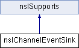

类 nsIChannelEventSink 继承关系图:

Public 成员函数 | |
| nsresult | AsyncOnChannelRedirect (nsIChannel *oldChannel, nsIChannel *newChannel, uint32_t flags, nsIAsyncVerifyRedirectCallback *callback) |
 Public 成员函数 继承自 nsISupports Public 成员函数 继承自 nsISupports | |
| nsresult | QueryInterface (nsIIDRef riid, void **result) |
| nsrefcnt | AddRef () |
| nsrefcnt | Release () |
Public 属性 | |
| const UINT | REDIRECT_TEMPORARY = 1 |
| const UINT | REDIRECT_PERMANENT = 2 |
| const UINT | REDIRECT_INTERNAL = 4 |
| const UINT | REDIRECT_STS_UPGRADE = 8 |
该接口的文档由以下文件生成:
- E:/ReactOS-0.4.6/dll/win32/mshtml/nsiface.idl